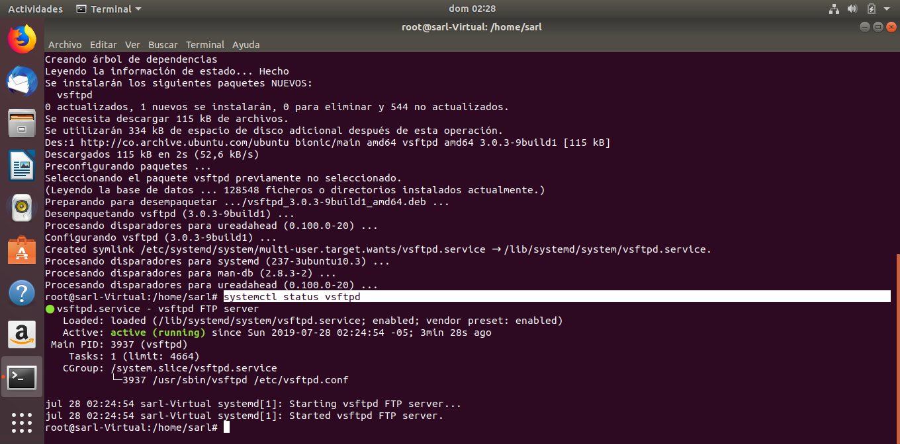
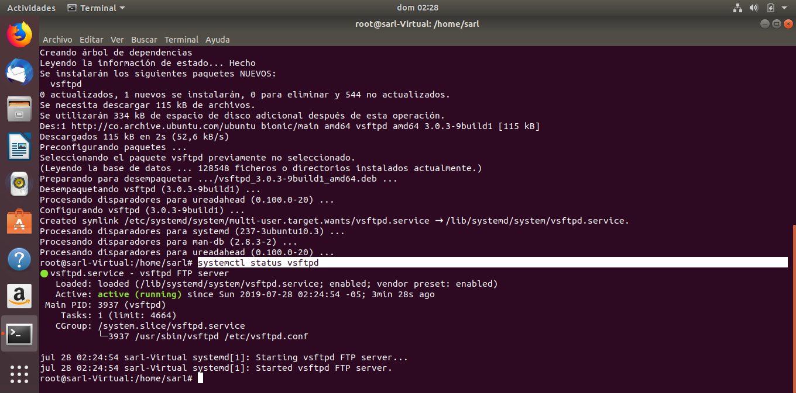

El Taller de Linux Ubuntu 18.04
Ubuntu 18.04 ya está aquí, y aunque suene demasiado optimista, o quizás sea parte del buen sabor de boca que deja Bionic Beaver cuando lo usas, me atrevería a decir que el futuro de Ubuntu luce brillante. O, al menos luce más interesante de lo que habían estado presentando en los últimos años. Ya con Ubuntu 17.10 habíamos podido echar un vistazo al nuevo rumbo de la distribución. Este es un Ubuntu que ha dejado atrás Unity, de una Canonical que ha dejado atrás sus ideas de la convergencia y Ubuntu Touch. Una empresa que ahora se va concentrar en su producto principal y rentable: el sistema operativo de escritorio. Con sabores novedosos como Ubuntu Budgie, los clásicos de siempre como Kubuntu con un KDE, un entorno que a veces parece avanzar mucho más que GNOME; o con distros como Ubuntu MATE que ya se habían plantado muy bien como alternativas al Ubuntu base con Unity, es el sabor original de la distro el que menos pasión y halagos lleva generando hace tiempo. Pero, algo parece estar cambiando
Descripción
El taller de Linux Ubuntu 18.04, da una pequeña descripción sobre lo más escencial de configuración la hora de instalar y montar los servicios de:
- Active Directory.
- Domain Name System ( DNS )
- Dynamic Host Configuration Protocol.( DHCP )
- File Transfer Protocol( FTP )
- Simple Mail Transfer Protocol ( SMTP )
Instalación De Ubuntu 18.04
Para la instación y desarrollo del taller , se procedio a descargar una Máquina Virtual y obtenida la imagen .iso de sistema operativo, de dio inicio al desarrollo del taller, la instalación de Linux Ubuntu 18.04 , es muy acorde a las necesidades de cada individuo, en este caso se utilizo la instalacion básica que se encuentra en la Red.
Acerca de ...
Estupendo que me conoscas, tengo 21 años y soy estudiante de Informática e Ingeniería de Sistemas en la Universidad Pedagógica y Tecnológica de Colombia. Soy una persona que puede cometer errores y, por lo tanto, aprender de ellos para lograr el éxito personal. Me gusta estar actualizado en informática y tecnologías. Actualmente estoy buscando una oportunidad para trabajar y mejorar mis habilidades, así como participar en una organización y retribuir a la comunidad o sociedad.
Conoce más acerca mi ... 
